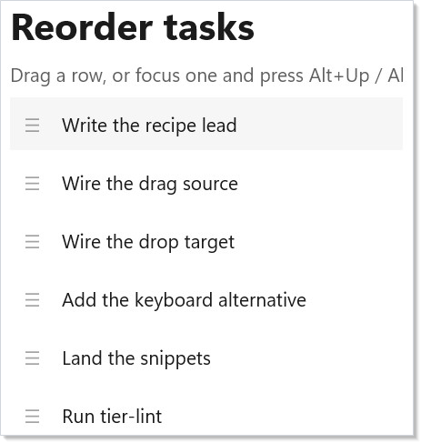

Recipe: Drag to Reorder¶
Drag-reorder is a UseState<List<T>> plus a function that splices
one item from one index to another. Microsoft.UI.Reactor (Reactor)'s keyed reconciler does
the rest — moves preserve identity, so the same row element keeps
its focus, its hover state, and its place in the visual tree.
Pointer drag is one entry point; an Alt+Up / Alt+Down keyboard
shortcut is the second, and it carries the accessibility story.
Primitives¶
| Concern | API |
|---|---|
| Ordered state | UseState<List<T>> |
| Stable identity across moves | Record Id field; row keyed in Select |
| Source-side drag | .OnDragStart<T, TPayload> |
| Target-side drop | .OnDrop<T, TPayload> |
| Hover indicator | .OnDragEnter writing to local state |
| Keyboard alternative | .OnKeyDown + InputKeyboardSource.GetKeyStateForCurrentThread |
| Focusable rows | .IsTabStop(true) + .OnGotFocus |
Data¶
// Identity lives on the record. Moves preserve `Id`, so the reconciler keeps
// the same row element and its focus state across a reorder.
record TaskItem(int Id, string Title);
static class Seed
{
public static readonly TaskItem[] Initial = new[]
{
new TaskItem(1, "Write the recipe lead"),
new TaskItem(2, "Wire the drag source"),
new TaskItem(3, "Wire the drop target"),
new TaskItem(4, "Add the keyboard alternative"),
new TaskItem(5, "Land the snippets"),
new TaskItem(6, "Run tier-lint"),
};
}
The record carries an Id. Moves never mint new ids — that's what
lets the reconciler keep the same row element across a reorder
instead of unmounting one and mounting another at the new slot.
State¶
// The list itself is a UseState<List<TaskItem>>. `draggingId` tracks
// the row currently being dragged so we can dim it; `hoverId` tracks
// the drop target so we can draw the insertion hint. Both reset on
// drop-completed.
var (items, setItems) = UseState<List<TaskItem>>(Seed.Initial.ToList());
var (draggingId, setDraggingId) = UseState<int?>(null);
var (hoverId, setHoverId) = UseState<int?>(null);
var (focusedId, setFocusedId) = UseState(Seed.Initial[0].Id);
Four UseState hooks: the list itself, the id of the row being
dragged (so we can dim it), the id of the hovered drop target (so
we can outline it), and the focused row id (so the keyboard
shortcut knows which row to move). Two of the four exist only
during an active drag and reset on completion.
The move¶
// Splice a single item from `fromIndex` to `toIndex`. The reconciler
// keys rows by `Id`, so this is a pure data move — no row remounts,
// no lost focus, no animation seam.
void Move(int fromIndex, int toIndex)
{
if (fromIndex == toIndex) return;
var copy = new List<TaskItem>(items);
if (fromIndex < 0 || fromIndex >= copy.Count) return;
toIndex = System.Math.Clamp(toIndex, 0, copy.Count - 1);
var item = copy[fromIndex];
copy.RemoveAt(fromIndex);
copy.Insert(toIndex, item);
setItems(copy);
}
void MoveById(int sourceId, int targetId)
{
var from = items.FindIndex(i => i.Id == sourceId);
var to = items.FindIndex(i => i.Id == targetId);
if (from >= 0 && to >= 0) Move(from, to);
}
The whole reorder is a list splice. RemoveAt then Insert on a
fresh copy, then setItems — the reconciler diffs old vs. new by
Id, sees the same set of records in a different order, and reuses
every row. MoveById is a small ergonomic wrapper so the pointer
handlers can pass payload ids without computing indices.
Keyboard alternative¶
// Alt+Up / Alt+Down moves the focused row. This is the load-bearing
// accessibility story — drag-and-drop alone fails screen-reader and
// motor-impaired users; a keyboard alternative makes the recipe
// WCAG-conformant.
void HandleKey(int rowId, Microsoft.UI.Xaml.Input.KeyRoutedEventArgs e)
{
var alt = (Microsoft.UI.Input.InputKeyboardSource
.GetKeyStateForCurrentThread(VirtualKey.Menu)
& Windows.UI.Core.CoreVirtualKeyStates.Down) != 0;
if (!alt) return;
var idx = items.FindIndex(i => i.Id == rowId);
if (idx < 0) return;
if (e.Key == VirtualKey.Up && idx > 0)
{
Move(idx, idx - 1);
setFocusedId(rowId);
e.Handled = true;
}
else if (e.Key == VirtualKey.Down && idx < items.Count - 1)
{
Move(idx, idx + 1);
setFocusedId(rowId);
e.Handled = true;
}
}
Pointer drag is half the recipe — the keyboard path is the other
half. Alt+Up and Alt+Down move the focused row by one slot;
e.Handled = true keeps the event from bubbling to a parent
ScrollViewer. Modifier detection uses
InputKeyboardSource.GetKeyStateForCurrentThread
because KeyRoutedEventArgs.KeyStatus doesn't carry Alt cleanly.
Render¶
Element Row(TaskItem item)
{
var isDragging = draggingId == item.Id;
var isHover = hoverId == item.Id && draggingId is not null && draggingId != item.Id;
var isFocused = focusedId == item.Id;
return HStack(8,
TextBlock("☰").Opacity(0.4).Width(20), // grab handle glyph
TextBlock(item.Title)
)
.Padding(10)
.Background(isFocused ? Theme.SubtleFill : Theme.CardBackground)
.WithBorder(isHover ? Theme.Accent : Theme.ControlStroke, isHover ? 2 : 1)
.Opacity(isDragging ? 0.4 : 1.0)
.IsTabStop(true)
.OnGotFocus((_, _) => setFocusedId(item.Id))
.OnKeyDown((_, e) => HandleKey(item.Id, e))
.OnDragStart<StackElement, int>(
getPayload: () => { setDraggingId(item.Id); return item.Id; },
allowedOperations: DragOperations.Move,
onEnd: _ => { setDraggingId(null); setHoverId(null); })
.OnDragEnter(args =>
{
if (args.Data.TryGetTypedPayload<int>(out var srcId) && srcId != item.Id)
setHoverId(item.Id);
})
.OnDragLeave(_ =>
{
if (hoverId == item.Id)
setHoverId(null);
})
.OnDrop<StackElement, int>(srcId =>
{
MoveById(srcId, item.Id);
setDraggingId(null);
setHoverId(null);
}, acceptedOps: DragOperations.Move);
}
return VStack(8,
Heading("Reorder tasks"),
TextBlock("Drag a row, or focus one and press Alt+Up / Alt+Down.")
.Opacity(0.7),
VStack(4,
items.Select(item => Row(item).WithKey(item.Id.ToString())).ToArray()
)
).Padding(16).Width(320);

Each row is a HStack with a grab-handle glyph and the title.
.OnDragStart<StackElement, int> advertises the row's Id as a
typed int payload; .OnDrop<StackElement, int> accepts an int
payload on any sibling row and calls MoveById. The dragged row
fades to 0.4 opacity; the hover target gets a 2-px accent border.
IsTabStop(true) plus .OnGotFocus makes every row a keyboard
landing pad so the Alt+Arrow shortcut has somewhere to anchor.
Tips¶
Key your rows by the record's Id, not by index. Index keying
defeats the whole point — every move would invalidate every row
after the drop position and the reconciler would remount them.
Collections covers the key-selector pattern
in depth.
Treat the keyboard path as load-bearing, not as a fallback.
A drag-only reorder is unusable with a screen reader, with a
keyboard-only workflow, or with motor impairments that preclude
fine pointer control. The Alt+Arrow shortcut is the same Move
function as the pointer path — there's no duplicated logic and the
Accessibility story flows from one code
path.
Don't reach for a ListView<T> for ten rows. A virtualized
collection's drag surface is genuinely harder (the row element
under the pointer may unmount mid-drag as the user scrolls), and a
plain VStack of rows is enough for recipe-sized lists. Promote
to ListView<T> only when row counts cross the dozens.
Animation is optional polish. Reactor doesn't ship a turnkey
list-reorder animation primitive at the moment; for the doc-app
above, the position change is instant. Animation
covers the building blocks (UseAnimation, easing curves) if you
want to layer a 150ms slide on top.
Next Steps¶
- Collections — Key selectors, the
underlying list primitives, and when to promote to
ListView<T>. - Animation — Optional motion polish for the reorder transition.
- Accessibility — Focus, tab order, and the full keyboard-alternative story that the Alt+Arrow handler participates in.
- Input and Gestures — The full drag/drop surface: typed payloads, allowed operations, UI override hooks, drag-end callbacks.
- Recipe: Master-detail — Adjacent recipe for the selection-driven shape.
- Recipes index — Back to the gallery.